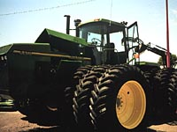
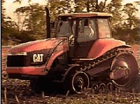
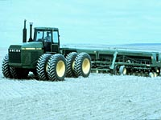
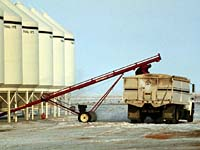
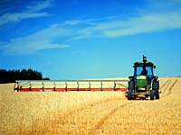
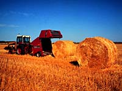

Common Farm Implements |

Modern intensive crop management involves the use of a variety machines to accomplish certain jobs.
Here are some of the common farm machines and what they are used for - keep this page handy as you explore crop management.
|

Tractor - A tractor is an essential machine on every
farm used to pull most farm implements. The power-take-off (PTO) is an essential part
of the tractor that is used to power farm implements such as wathers, balers, manure spreaders etc.
Many tractors have four wheel drive or tracks like this
one. These systems enable the tractor to pull heavy equipment and operate in soft or wet soil.
Tractors can be very powerful, with
diesel engines capable of 400-500 horsepower with over 100 horsepower available at the PTO.
|
Cultivator -
Cultivator blades or "shovels" work under the soil surface,
breaking up soil without turning it over. This leaves more plant
material on the surface, while controlling weeds, preparing seed
beds, or incorporating chemicals or fertilizers (with attachments).
|

Seeder - Various types of seeders are used to open furrows in the soil,
drop regulated quantities of seed into the furrows, and cover
the seed. Seeders can use either disc furrowopeners or shovel
type openers, and can also place fertilizer with the seed. Most of this type of seeder requires that the
land be worked to form a seed bed prior to seeding.
|

Air Seeder -
Uses air pressure to distribute seed through hoses from a central
tank to the furrow openers on cultivators or seed drills. It is
also used to place fertilizer and pesticides. A double-shoot system has two hoppers and two separate air lines to place
seed and fertilizer. A triple-shoot system can place seed, fertilizer and herbicide from three separate hoppers.
An air seeder has an advantage over a normal seeder of reducing the time to seed a crop.
It can drill seed directly into stubble without first cultivating.
It also has good depth control and accurate fertilizer placement.
Fertilizer placement is important for some small seed crops such as canola. Only small amounts
of N fertilizer such as urea can be placed with the seed or germination will be affected.
The air seeder can place the fertilizer in a band a few centimetres to the side or below
of the seed so that the intervening soil acts as buffer against the salt effects.
Fertilizer placed below the seed is usually in a moist soil layer.
Here it can be taken up more easily as the seedling roots absorb water.
|

Augers - Augers are used to move grain and fertilizer. Inside a long metal
tube, a screwlike device turns and carries the grain upward
and dumps it into a grain storage bin or a truck.
|

Sprayer - Used
to apply liquid herbicides or insecticides. A chemicalwater
mixture is sprayed onto the soil or crop from a tank through a
series of nozzles along a boom.
|

Swather -
(windrower). A reeltype cutter cuts the grain stems and
lays the plants in a swath, or windrow, on top of the stubble.
Swathers can be self-propelled (open fields faster,
with no trampling of grain, can be used to
cut fields from one side, which can reduce time and distance of
hauling grain from combines, provide more options
in ways fields may be cut), or tractormounted or tractor-pulled (more reasonably priced).
|

Baler -
once the swaths have reached an appropriate moisture content, they can be baled. The most common baler today is the round
baler. Round bales can be stored on the farm for winter feed for livestock or wrapped in plastic to produce silage.
Silage usually requires a more moist swath. Some high quality forage is baled and then compressed for export via ralicar and container
ships to places such as Japan.
|

Combine - A combine picks up swaths of grain, separates the grain from the
stems, temporarily stores the grain, and puts the straw back on
the field. Some crops are "straight combined". In straightcombining, a machine is equipped with its own
reel and cutter bar to cut the grain and direct it onto a rotating
auger. This auger draws the cut grain toward the centre, where
it is taken into the machine. When grain has already been swathed,
a combine will have a special pick up assembly instead of a reel
and cutter bar.
After the grain is cut, most of the seeds are separated from the straw at the cylinder/concave
and fall to a chaffer/sieve. The straw continues under or over
a beater. In certain combines, further separation takes place
along a series of straw walkers and sieves. Other combines have
two revolving cylinders through which the straw passes. Rub bars
or tines complete the threshing action as the straw moves through.
The combine has the ability to clean the seeds. Shaking of seeds, chaff and pieces of straw through screens, in combination with blasts
of air, results in final separation and cleaning. The relatively clean
seed is eventually taken to a grain tank.
Combines may or may
not have the following optional equipment.
- Pickup reels: These
are reels with rakelike "fingers" to assist in
lifting up lodged or tangled crops, or crops flattened by snow.
- Grainsaving
guards: Special devices for working in tangled
or lodged crops.
- Strawchoppers: These
devices cut or chop the straw into smaller or finer pieces before
spreading it.
- Reversible feeders:
Reversible feeders help to unplug combines (of heavy, damp straw) quickly.
|